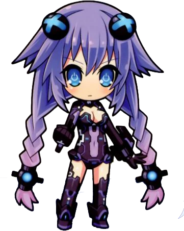

This account is run by @That1M8Head.
Emoji indicators are used to denote the current speaker. Example:
💗 "I'll nep your face!"
The emoji used here is 💗, which corresponds to Human Form Neptune.
Emojis used will be shown next to respective characters later on.
Neptune (Human Form) 💗
Neptune's default form. This is what she looks like most of the time.
Neptune (Older Form) 💖
Neptune's older-looking form, which looks a lot like another dimension's Neptune. She gets two blades and a pistol in this form.

Purple Heart 💜
Neptune's goddess form. She not only looks more mature, but acts more mature – Wait, what do you mean I can't just copy all of this from her Neptunia U profile? What do you mean I can't use the same joke twice?!